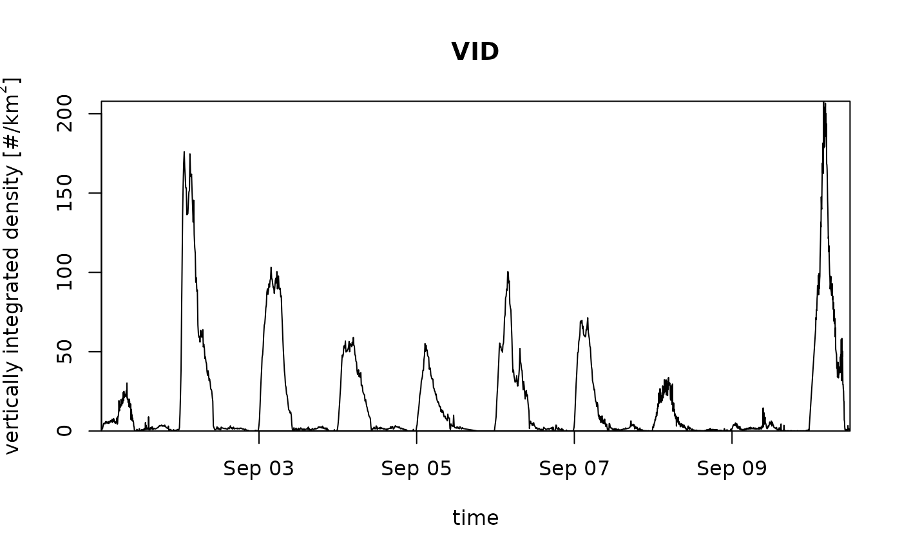
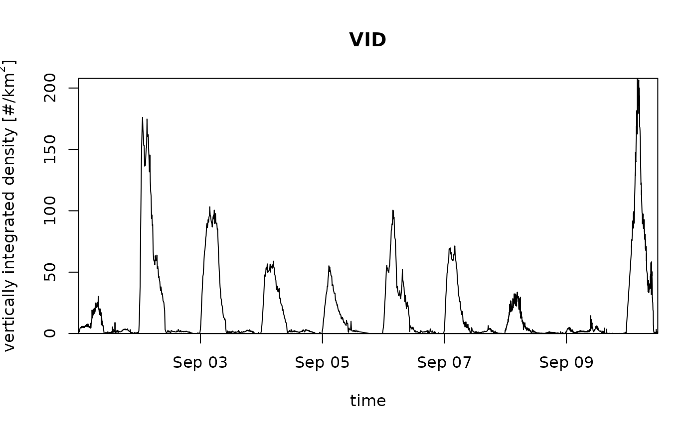

Plot an object of class vpi.
# S3 method for class 'vpi'
plot(
x,
quantity = "mtr",
xlab = "time",
ylab = "migration traffic rate [#/km/h]",
main = "MTR",
night_shade = TRUE,
elev = -0.268,
lat = NULL,
lon = NULL,
ylim = NULL,
nightshade = TRUE,
...
)Arguments
- x
1 class object inheriting from class
vpi, typically a call to integrate_profile.- quantity
Character string with the quantity to plot, one of
vid(vertically integrated density),vir(vertically integrated reflectivity),mtr(migration traffic rate),rtr(reflectivity traffic rate),mt((cumulative) migration traffic),rt((cumulative) reflectivity traffic),ff(height-averaged ground speed)dd(height-averaged direction)u(height-averaged u-component of ground speed),v(height-averaged v-component of ground speed).
- xlab
A title for the x-axis.
- ylab
A title for the y-axis.
- main
A title for the plot.
- night_shade
Logical, whether to plot night time shading.
- elev
Numeric, sun elevation to use for day/night transition, see sunrise.
- lat
(optional) Latitude in decimal degrees. Overrides the lat attribute of
x.- lon
(optional) Longitude in decimal degrees. Overrides the lon attribute of
x.- ylim
y-axis plot range, numeric atomic vector of length 2.
- nightshade
Deprecated argument, use night_shade instead.
- ...
Additional arguments to be passed to the low level plot plotting function.
Value
No return value, side effect is a plot.
Details
The integrated profiles can be visualized in various related quantities, as specified by
argument quantity:
vid: Vertically Integrated Density, i.e. the aerial surface density of individuals. This quantity is dependent on the assumed radar cross section per individual (RCS)vir: Vertically Integrated Reflectivity. This quantity is independent of the value of individual's radar cross sectionmtr: Migration Traffic Rate. This quantity is dependent on the assumed radar cross section (RCS)rtr: Reflectivity Traffic Rate. This quantity is independent on the assumed radar cross section (RCS)mt: Migration Traffic. This quantity is dependent on the assumed radar cross section (RCS)rt: Reflectivity Traffic. This quantity is independent on the assumed radar cross section (RCS)ff: Horizontal ground speed in m/sdd: Horizontal ground speed direction in degreesu: Ground speed component west to east in m/sv: Ground speed component south to north in m/sheight: Mean flight height (height weighted by reflectivity eta) in m above sea level The height-averaged ground speed quantities (ff,dd,u,v) and height are weighted averages by reflectivity eta.
Examples
# vertically integrate a vpts object:
vpi <- integrate_profile(example_vpts)
# plot the migration traffic rates
plot(vpi)
 # plot the vertically integrated densities, without night shading:
plot(vpi, quantity = "vid", night_shade = FALSE)

# plot the vertically integrated densities, without night shading:
plot(vpi, quantity = "vid", night_shade = FALSE)
